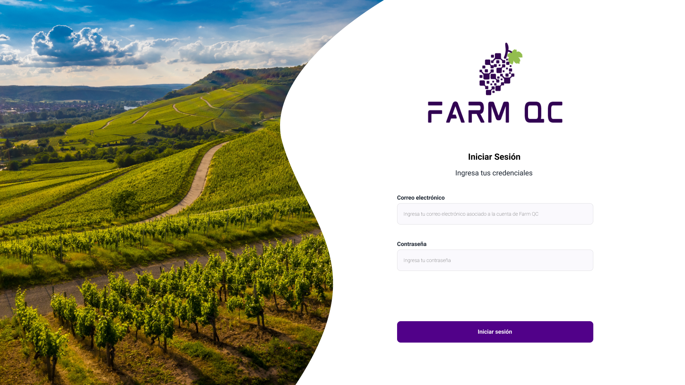
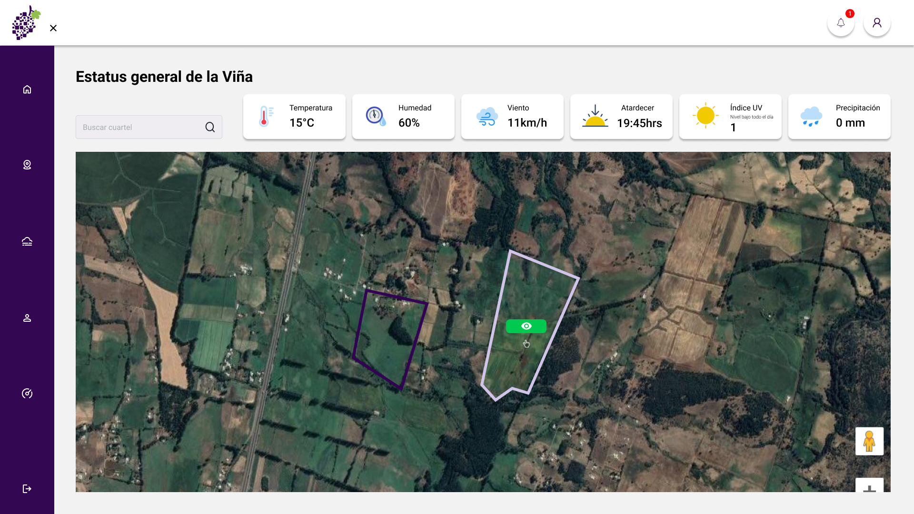
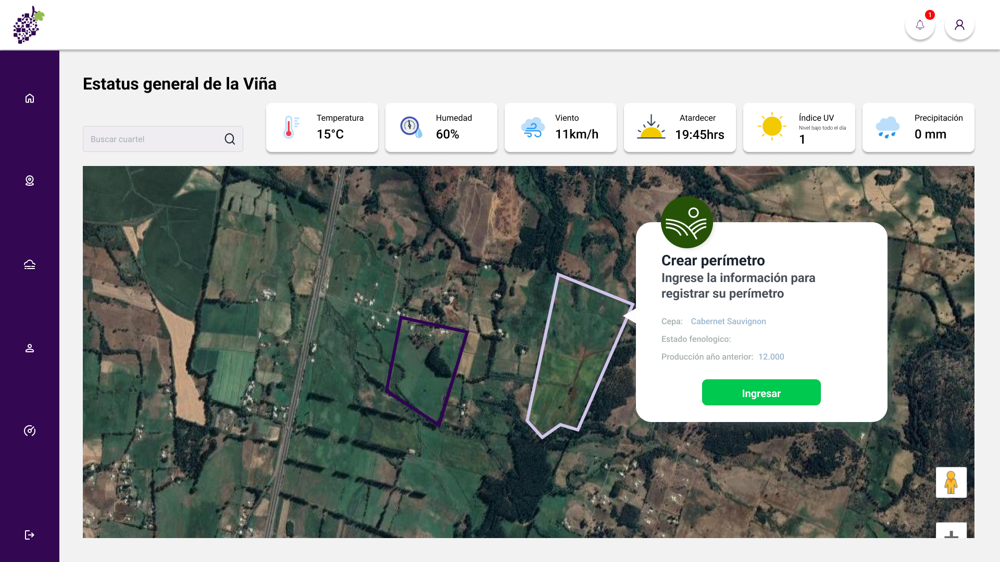
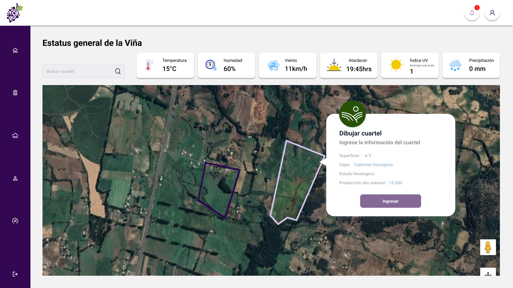
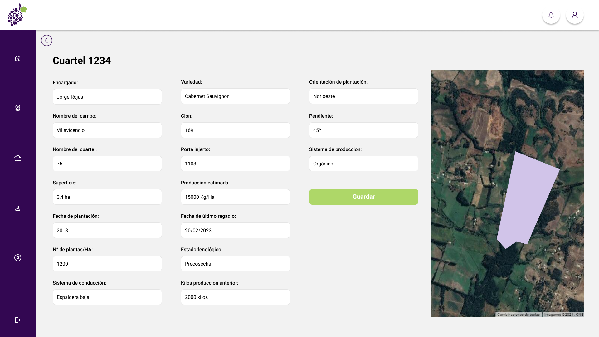
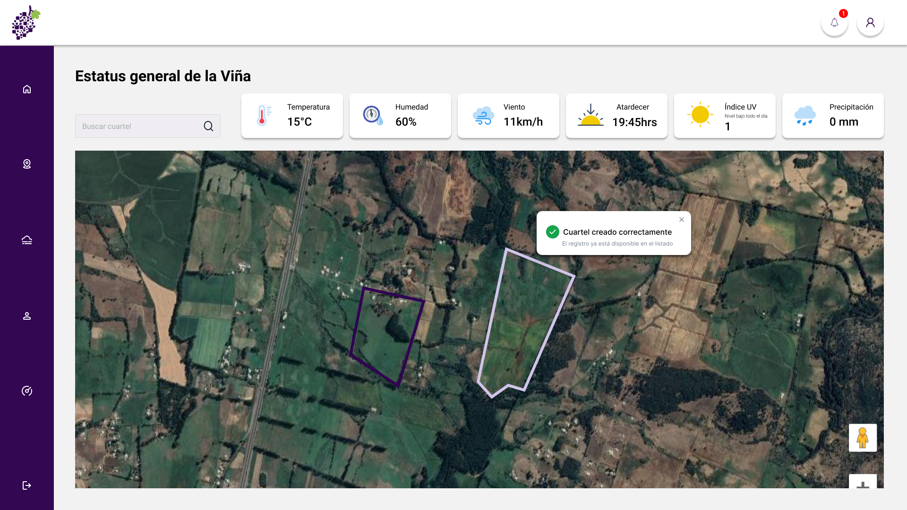

Caso de estudio
Rediseño de Farm QC, un SaaS IoT B2B, enfocado en reducir fricción crítica y habilitar adopción real en empresas.
abandono inicial
contactos a soporte
Cliente piloto no continuó
Rol: Product Designer
Duración: ~12 meses
Tipo: SaaS B2B IoT

Farm QC es un SaaS B2B basado en IoT orientado a empresas agrícolas, cuyo modelo de negocio depende de la adopción operativa del sistema por parte de equipos en terreno.
La fricción en el uso inicial impactaba directamente en la retención y en la viabilidad comercial del producto.
El sistema cumplía funcionalmente, pero fallaba en adopción: los usuarios no lograban completar tareas críticas sin asistencia.
Esto no era un problema de interfaz, sino de modelo de interacción: el producto exigía toma de decisiones constante en usuarios no expertos.
80% de usuarios no completaba la tarea principal.
El cliente piloto abandonó el producto.
Antes del rediseño, el producto fue utilizado por una empresa piloto durante aproximadamente dos meses.
Durante este período, se observó que cerca del 80% de los usuarios abandonaban el flujo principal antes de completarlo, y requerían soporte en promedio cinco veces al día.
Como resultado, la empresa decidió dejar de utilizar el producto.
Desde gerencia hasta operarios. Nivel de conocimiento heterogéneo, lo que exige claridad extrema en flujos y lenguaje.
UX/UI Designer Responsable de redefinir el modelo de interacción del producto para habilitar adopción en contexto real de uso.
UI condicionada por librerías y APIs no customizables. Diseño debía adaptarse a componentes existentes.
Se realizaron pruebas con usuarios no expertos (cercanos al equipo), simulando condiciones de uso real en perfiles con bajo conocimiento técnico.
Se observaron bloqueos sistemáticos en la navegación, especialmente en la comprensión del siguiente paso.
Se documentaron momentos donde los usuarios:
Se analizaron plataformas similares a nivel internacional, identificando el uso de flujos guiados en procesos complejos.
Cada iteración del flujo fue ajustada en función de bloqueos detectados, priorizando claridad y progresión.
Se define una única acción primaria por paso, eliminando ambigüedad.
Priorización clara de acciones para guiar el flujo.
Estados visibles para reducir incertidumbre.


Proceso paso a paso que reduce incertidumbre.
Claridad en acciones y prioridades.
Feedback inmediato para evitar errores.
Error, éxito y loading definidos.
Este flujo define el onboarding inicial del sistema, donde el usuario crea su perímetro de gestión IoT. El diseño guía paso a paso el proceso, asegurando claridad en la configuración y reduciendo errores en la carga de datos.

El sistema orienta al usuario hacia la acción principal: crear su perímetro. Se prioriza una instrucción clara para evitar ambigüedad en el primer contacto.

El formulario estructura la información clave en bloques, facilitando la comprensión y reduciendo errores en la configuración del perímetro.

El sistema entrega feedback inmediato mediante un mensaje de éxito, confirmando que el perímetro fue creado correctamente.
El flujo fue diseñado para que el usuario siempre entienda qué hacer, qué está haciendo y cuál fue el resultado de su acción, reduciendo fricción en el onboarding y mejorando la correcta configuración del sistema.
El principal indicador de mejora fue la continuidad del flujo sin intervención externa.
Limitaciones técnicas impidieron modificar componentes base.
Se priorizó claridad del flujo sobre flexibilidad del sistema.
Esto implica que usuarios avanzados tienen menor control, pero reduce significativamente el riesgo de abandono en usuarios nuevos.